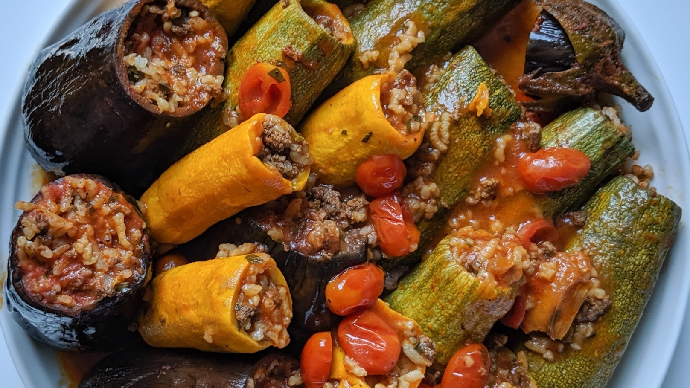

Mahshi

Description
Mahshi is one of the main platters in Egyptian banquets specially in Ramadan when friends and family gather to have iftar at sundown.
Ingredients
For the rice mixture:
- 3 Tablespoons olive oil.
- 1 medium yellow onion Chopped.
- 2 Tablespoons tomato paste.
- 1 can (16oz) tomato sauce.
- 2 cups short grain rice.
- 1 cup fresh parsley chopped.
- ½ cup fresh cilantro chopped.
- ⅓ cup fresh dill chopped.
- 1 Tablespoon dry mint.
- ½ teaspoon ground black pepper.
- ½ teaspoon salt or to taste.
The above mixture is enough for one of the following:
- 4 pounds Mexican squash.
- 2.8 or almost 3 pounds Anaheim pepper.
- 2.8 or almost 3 pounds white or Japanese eggplant.
- ½ pound grape leaves.
Cooking liquid:
- 2 ½ cup hot stock or water.
- 1 bouillon cube.
- 1 teaspoon tomato paste.
Instructions
Make the rice mixture:
- In a pot over medium heat, add oil and then sauté onions until translucent for about 2-3 minutes.
- Add the tomato sauce and paste. Stir to dissolve tomato paste.
- When it starts bubbling, add rice, spices and herbs cook for just two minutes.
- Turn heat off and set aside to cool down.
Prepare the veggies:
- Wash the veggies thoroughly and clean them well, Note4.
- Core veggies and make sure not to tear the walls especially when making zucchini or eggplants.
- For Anaheim pepper, I usually like to cut it in half for easy stuffing and make sure to buy long straight ones.
Stuff the veggies:
- Stuff each one with the rice mixture making sure not to reach the top, so basically you want to leave about ½ cm of the top of your vegetable.
- Rice will expand after cooking and if you are overstuffing the veggies, rice will come off. Not that it will taste bad but the presentation will not be as fancy.
- Arrange herbs stems, the inside of your veggies that you just took out, lemon slices, tomato slices or onion slices at the bottom of your cooking pot to prevent scorching.
- Arrange the stuffed veggies in your pot.
Cook:
- Dissolve bouillon and tomato paste in the hot water.
- Pour into the pot so that the cooking liquid is halfway through the veggies layers.
- Place pot on medium high, bring to a boil then reduce heat and simmer for 40 minutes until veggies are cooked.
- Wait for it to cool down a bit and serve.